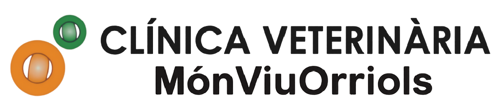
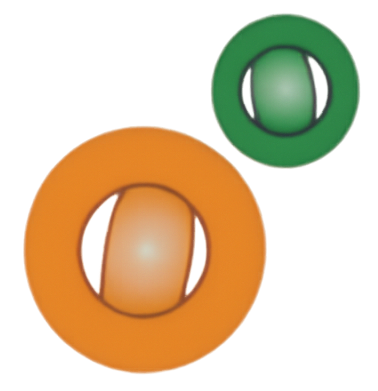

Demo preparada por Altera para vuestra clínicaMónViu atiende aunque estéis en consulta.
Así funcionarían el WhatsApp con IA y la recepcionista de voz en vuestra clínica de Orriols. Toca los ejemplos, habla con Laura y mira cómo llega todo al panel.
En vuestra web decís: Si no podemos responder en el momento, te devolveremos la llamada tan pronto como sea posible.
La idea es que ese «en el momento» lo cubra un asistente, y que la llamada de vuelta llegue ya con los datos tomados.Fuente: página de contacto de monviu.es
WhatsApp con IA
Contesta al momento con lo que vosotros le enseñáis: servicios, cómo llegar, cita previa, domicilio y pienso bajo pedido. No diagnostica ni da pautas médicas, y no da precios si no lo decidís vosotros.
Ejemplos guionizados. En la clínica, el asistente respondería con la información y las reglas que decidáis vosotros, y os pasaría la conversación cuando hace falta una persona. El recurso de urgencias y los textos se confirman con vosotros.

MónViu-OrriolsAsistente virtual · responde al momentoRecepcionista de voz
Cuando estáis con un animal y no podéis coger el teléfono, contesta Laura: toma los datos para la cita previa y os deja un resumen por escrito de cada llamada.
Así suena una llamada
Lo que te llega después
Un resumen escrito de cada llamada, en tu panel y en tu móvil.
No se guarda el audio de la llamada, solo el texto. Laura dice al empezar que es una asistente virtual.
Tu panel
Agenda, ficha de cada mascota y su dueño, conversaciones y avisos en un solo sitio. Lo que el asistente prepara espera vuestra aprobación.
Agenda de hoy
Ficha
Nala
Avisos para ti
El asistente prepara los avisos con las fechas de cada ficha. No sale ninguno hasta que lo apruebas.
Así quedaría en vuestra web
Vuestra web se queda como está. Solo se añaden dos botones flotantes: WhatsApp, que ya contesta el asistente, y «Habla con Laura» para quien prefiere llamar.
Aquí sigue el contenido actual de vuestra web, sin cambios.
Simulación. El menú y la cabecera imitan vuestra web solo para que veáis dónde irían los botones; el contenido real no se toca.
¿Lo vemos con vosotros?
Un diagnóstico de 30 minutos, por videollamada o en la clínica. Escríbenos a contacto@altera-es.com o por WhatsApp.